Django Best Practices
March, 2014
This presentation is prepared based on the great book Two Scoops of Django: Best Practices For Django 1.5 by Daniel Greenfeld and Audrey Roy
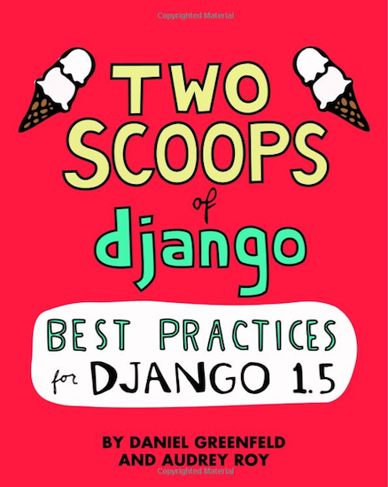Core Concepts
KISS
Keep It Simple, Stupid
Fat Models, Helper Modules, Thin Views, Stupid Templates
- Put more logic into anything but views and templates
- Template tags and filters should contain the minimum logic possible
Start With Django by Default
- If we run into obstacles, we explore all possibilities before replacing core Django components
Coding Style
The Importance of Making Your Code Readable
-
Avoid abbreviating variable names
- Good: balance_sheet_decrease
- Bad: bsd or bal_s_d
- Write out your function argument names
- Document your classes and methods
- Refactor repeated lines of code into reusable functions or methods
PEP8
- Use 4 spaces per indentation level
- Separate top-level function and class definitions with two blank lines
- Method definitions inside a class are separated by a single blank line
The Word on Imports
The Order:
- Standard library imports
- Imports from core Django
- Imports from third-party apps
- Imports from the apps that you created as part of your Django project
The Word on Imports
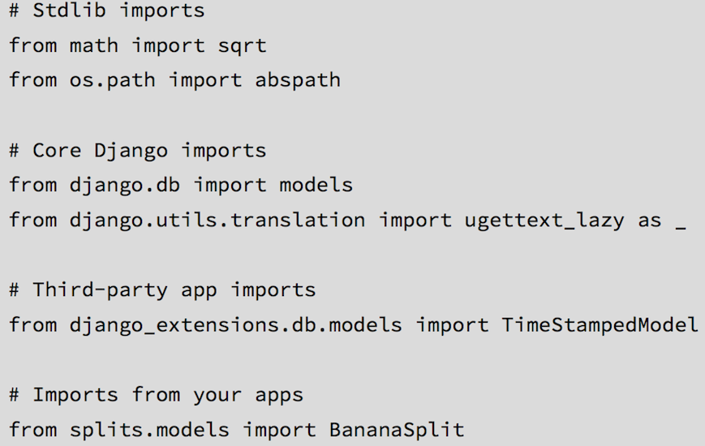Use Explicit Relative Imports
Don't do this:
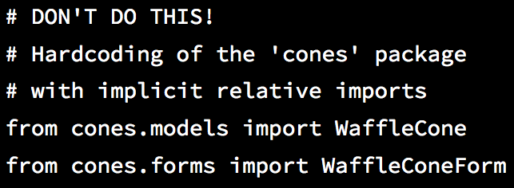Use Explicit Relative Imports
Do this:
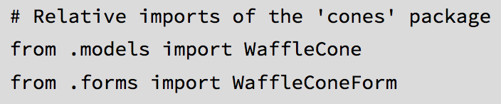Import Types
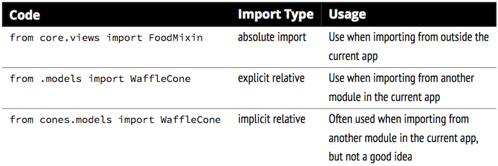Get into the habit of using explicit relative imports.
Avoid Using Import *
Don't do this:
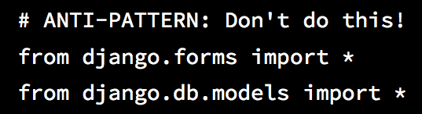Avoid Using Import *
The reason for this is to avoid implicitly loading all of another Python module’s locals into and over our current module’s namespace, which can produce unpredictable and sometimes catastrophic results.
Django Coding Style Guidelines
- Use underscores (the '_' character) in URL pattern names rather than dashes as this is friendlier to more IDEs and text editors.
- For the same reason, use underscores rather than dashes in template block names.
- Follow the commonly used naming pattern of <app_name>_tags.py for template tags
Summary
- Follow a consistent coding style
- Projects with varying styles are much harder to maintain, slowing development and increasing the chances of developer mistakes
The Optimal Django Environment Setup
Use the Same Database Engine Everywhere
A common developer pitfall is using SQLite3 for local development and PostgreSQL (or another database besides SQLite3) in production.
They may not behave identical in different environments.
- Fixtures Are Not a Magic Solution
- You Can’t Examine an Exact Copy of Production Data Locally
- Different Databases Have Different Field Types/Constraints
Use Pip and Virtualenv
- Pip is used to manage and install Python packages
- Without virtualenv you have to update dependency versions every time you switch projects
- If that sounds tedious, keep in mind that most real Django projects have at least a dozen dependencies to maintain
- $ source ~/Envs/udemy/bin/activate
Install Django and Other Dependencies via Pip
Use a Version Control System
How to Layout Django Projects
Prefered Project Layout
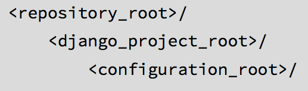Top Level: Repository Root
- The top-level <repository_root>/ directory is the absolute root directory of the project
- Place other critical components like the README.rst, docs/ directory, design/ directory, .gitignore, requirements.txt files, and other high-level files that are required for deployment
Second Level: Django Project Root
- This directory contains the <configuration_root>, media and static directories, a site-wide templates directory, as well as Django apps specific to your particular project
Third Level: Configuration Root
- <configuration_root> directory is where the settings module and base URLConf (urls.py) are placed
- This must be a valid Python package (containing an __init__.py module)
Sample Project Layout
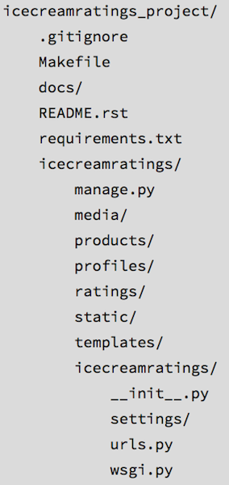What About the Virtualenv?
- Put all our environments in one directory and all our projects in another

TIP: Listing Current Dependencies
pip freeze --local
Template to Generate Layout
django-admin.py startproject --template=https://github.com/twoscoops/django-twoscoops-project/zipball/master --extension=py,rst,html $project-name
Summary
Whatever layout is chosen should be documented clearly
Fundamentals of Django App Design
Definitions
- A Django project is a web application powered by the Django web framework
- Django apps are small libraries designed to represent a single aspect of a project. A Django project is made up of many Django apps. Some of those apps are internal to the project and will never be reused; others are third-party Django packages.
- Third-party Django packages are simply pluggable, reusable Django apps that have been packaged with the Python packaging tools.
The Golden Rule of Django App Design
"Write programs that do one thing and do it well"
The Golden Rule of Django App Design
Each app should be tightly focused on its task
If an app can’t be explained in a single sentence of moderate length, or you need to say 'and' more than once, it probably means the app is too big and should be broken up
What to Name Your Django Apps
- When possible keep to single word names like flavors, animals, blog, polls, dreams, estimates, and finances. A good, obvious app name makes the project easier to maintain
- As a general rule, the app’s name should be a plural version of the app’s main model, but there are many good exceptions to this rule, blog being one of the most common ones
- Use valid, PEP 8-compliant, importable Python package names: short, all-lowercase names without numbers, dashes, periods, spaces, or special characters. If needed for readability, you can use underscores to separate words, although the use of underscores is discouraged
When in Doubt, Keep Apps Small
Try and keep your apps small. Remember, it’s better to have many small apps than to have a few giant apps.
Summary
- Each Django app should be tightly-focused on its own task, possess a simple, easy-to-remember name
- If an app seems too complex, it should be broken up into smaller apps
Settings and Requirements Files
Best Practices
-
All settings files need to be version-controlled
- This is especially true in production environments, where dates, times, and explanations for settings changes absolutely must be tracked
-
Don’t Repeat Yourself
- You should inherit from a base settings file rather than cutting-and-pasting from one file to another
-
Keep secret keys safe
- They should be kept out of version control
Avoid Non-Versioned Local Settings
Let’s break up development, staging, test, and production settings into separate components that inherit from a common base file all tracked by version control
Using Multiple Settings Files
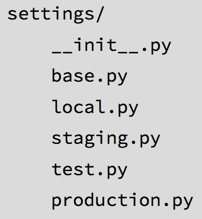TIP: Multiple Files with Continuous Integration Servers
You’ll also want to have a ci.py module containing that server’s settings.
Run Server
python manage.py runserver --settings=udemy.settings.local
--settings or DJANGO_SETTINGS_MODULE

DEV Settings Example
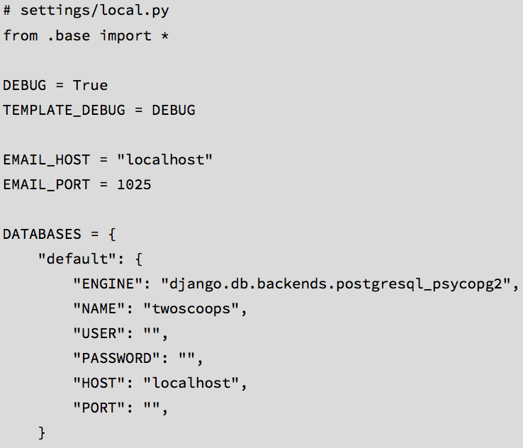Keep Secret Keys Out with Environment Variables
- Secrets often should be just that: secret! Keeping them in version control means that everyone with repository access has access to them
- Secret keys are configuration values, not code
To resolve this, our answer is to use environment variables
Benefits of Using EV
- Keeping secrets out of settings allows you to store every settings file in version control without hesitation. All of your Python code really should be stored in version control, including your settings
- Instead of each developer maintaining an easily-outdated, copy-and-pasted version of the local_settings.py.example file for their own development purposes, everyone shares the same version-controlled settings/local.py
- System administrators can rapidly deploy the project without having to modify files containing Python code
- Most platforms-as-a-service recommend the use of environment variables for configuration and have built-in features for setting and managing them
Local Settings & Usage
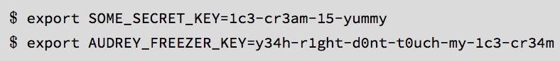 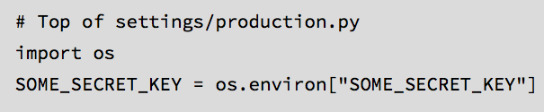Using Multiple Requirements Files
- First create a requirements/ directory in the <repository_root>
- Then create '.txt' files that match the contents of your settings directory
Sample Config
base.txt
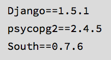local.txt
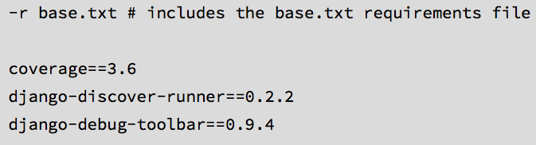Install From Reqs File
for development env
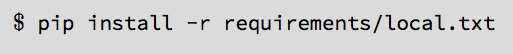for production env
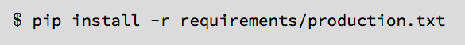Handling File Paths in Settings
Don't hardcode your paths
Hardcoded Paths
Don't do this:

Relative Paths with Unipath
Do this:
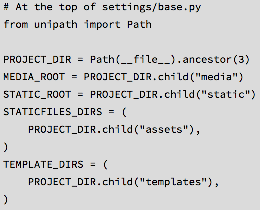Relative Paths with Std Libs
Do this:
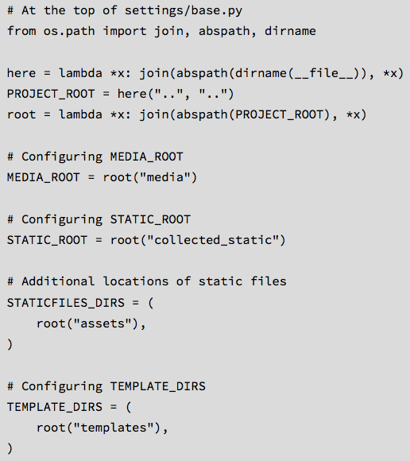Summary
- Everything except for critical security related values ought to be tracked in version control
- Any project that’s destined for a real live production server is bound to need multiple settings and requirements files
- The same thing applies to requirements files. Working with untracked dependency differences increases risk as much as untracked settings
Database/Model Best Practices
Basics
- Break Up Apps With Too Many Models
- Don’t Drop Down to Raw SQL Until It’s Necessary
- Add Indexes as Needed
- Be Careful With Model Inheritance
- Use South for Migrations
Condiser Adding Indexes?
- The index is used frequently, as in 10-25% of all queries
- There is real data, or something that approximates real data, so we can analyze the results of indexing
- We can run tests to determine if indexing generates an improvement in results
Django Model Inheritance
No Model Inheritance if models have a common field, give both models that field
- Pro: Makes it easiest to understand at a glance how Django models map to database tables
- Con: If there are a lot of fields duplicated across models, this can be hard to maintain
Django Model Inheritance
Abstract base classes tables are only created for derived models
- Pro: Having the common fields in an abstract parent class saves us from typing them more than once. We don’t get the overhead of extra tables and joins that are incurred from multi-table inheritance
- Con: We cannot use the parent class in isolation
Django Model Inheritance
Multi-table inheritance tables are created for both parent and child. An implied OneToOneField links parent and child
- Pro: Gives each model its own table, so that we can query either parent or child model. Also gives us the ability to get to a child object from a parent object: parent.child
- Con: Adds substantial overhead since each query on a child table requires joins with all parent tables. We strongly recommend against using multi-table inheritance
Django Model Inheritance
Proxy Models a table is only created for the original model
- Pro: Allows us to have an alias of a model with different Python behavior
- Con: We cannot change the model’s fields
WARNING: Avoid Multi-Table Inheritance
Multi-table inheritance, sometimes called "concrete inheritance" is considered by the authors and many other developers to be a bad thing. We strongly recommend against using it
Django Model Design
Design Basics
- Start Normalized
- Cache Before Denormalizing
- Denormalize Only if Absolutely Needed
- When to Use Null and Blank
Null vs. Blank
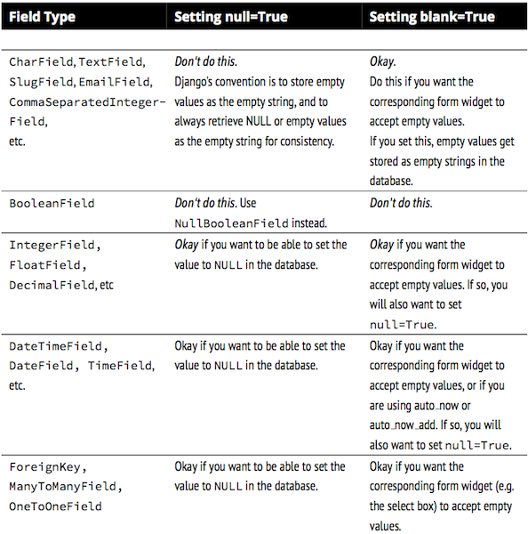Model Managers
Model Managers Basics
Every time we use the Django ORM to query a model, we are using an interface called a model manager to interact with the database
Django provides a default model manager for each model class, but we can define our own
Custom Model Manager
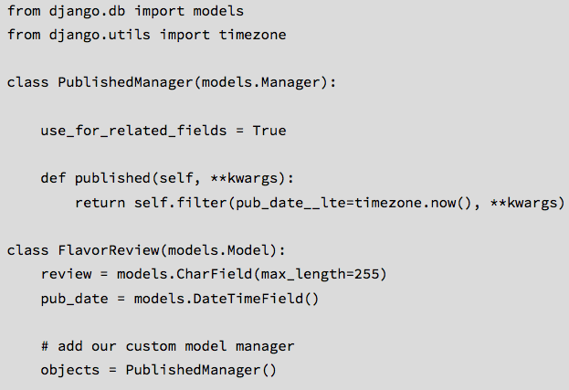Custom Model Manager
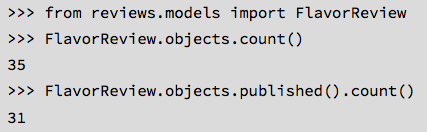Summary
- Take the time to design models thoughtfully
- Start normalized, and only denormalize if you’ve already explored other options thoroughly
- Try to address your performance issues with caching
- Don’t forget to use indexes. Add indexes when you have a better feel
- If you decide to use model inheritance, inherit from abstract base classes rather than concrete models. You’ll save yourself from the confusion of dealing with implicit, unneeded joins
- Use South to manage your data and schema migrations
Function- and Class- Based Views
When to use FBV or CBVs
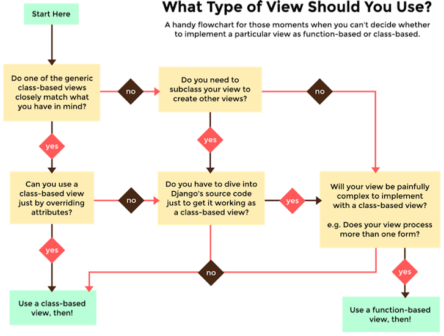Keep View Logic Out of URLConfs
- The views modules should contain view logic
- The URL modules should contain URL logic
Stick to Loose Coupling in URLConfs
Best Practices
- Don’t Repeat Yourself: No argument or attribute is repeated between views
- Loose coupling: We’ve removed the model and template names from the URLConf because views should be views and URLConfs should be URLConfs. We should be able to call our views from one or more URLConfs, and our approach lets us do just that
- URLConfs should do one thing and do it well: Related to our previous bullet, our URLConf is now focused primarily on just one thing: URL routing. We aren’t tracking down view logic across both views and URLConfs, we just look in our views
- Our views benefit from being class-based: Our views, by having a formal definition in the views module, can inherit from other classes. This means adding authentication, authorization, new content formats, or anything other business requirement tossed our way is much easier to handle
- Infinite flexibility: Our views, by having a formal definition in the views module, can implement their own custom logic
Try to Keep Business Logic Out of Views
- Placing so much logic in our views made it much harder to deliver new formats such as PDF or REST API
- Business logic is placed into easily reusable components, and called from within views, it makes extending components of the project to do more things much easier
Best Practices for Class-Based Views
Guideline when writing CBVs
- Less view code is better
- Never repeat code in views
- Views should handle presentation logic. Try to keep business logic in models when possible, or in forms if you must
- Keep your views simple
- Keep your mixins simpler
Mixin Rules
- The base view classes provided by Django always go to the right
- Mixins go to the left of the base view
- Mixins should inherit from Python’s built-in object type
Django CBVs
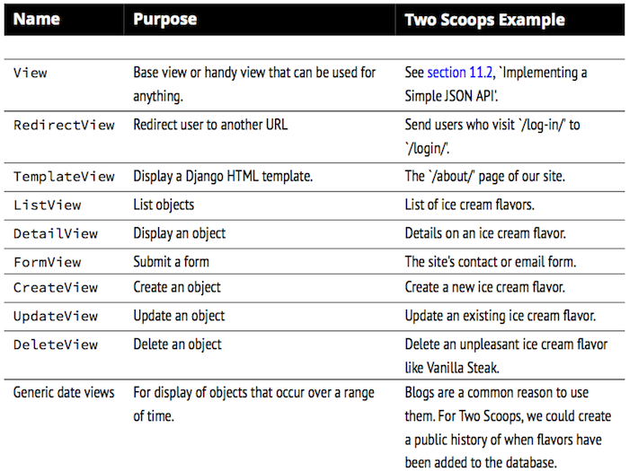Constraining Django CBV Access to Authenticated Users
PS: It uses braces lib
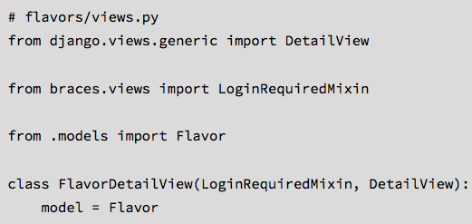Things to Know About Forms
Statistics
- 95% of Django projects should use ModelForms
- 91% of all Django projects use ModelForms
- 80% of ModelForms require trivial logic
- 20% of ModelForms require complicated logic
Use the POST Method in HTML Forms
Every HTML form that alters data must submit its data via the POST method
The only exception you’ll ever see to using POST in forms is with search forms, which typically submit queries that don’t result in any alteration of data.

Know How Form Validation Works
When you call form.is_valid(), a lot of things happen behind the scenes. The following things occur according to this workflow:
- If the form has bound data, form.is_valid() calls the form.full_clean() method
-
form.full_clean() iterates through the form fields and each field validates
itself:
- Data coming into the field is coerced into Python via the to_python() method or raises a ValidationError
- Data is validated against field-specific rules, including custom validators. Failure raises a ValidationError
- If there are any custom clean_ <field>() methods in the form, they are called at this time
- form.full_clean() executes the form.clean() method
-
If it’s a ModelForm instance, form._post_clean() does the following:
- Sets ModelForm data to the Model instance, regardless of whether form.is_valid() is True or False
- Calls the model’s clean() method. For reference, saving a model instance through the ORM does not call the model’s clean() method
Form Data Is Saved to the Form, Then the Model Instance
- First, form data is saved to the form instance
- Later, form data is saved to the model instance
Summary
Once you dig into forms, keep yourself focused on clarity of code and testability
Building REST APIs in Django
Fundamentals of Basic REST API Design
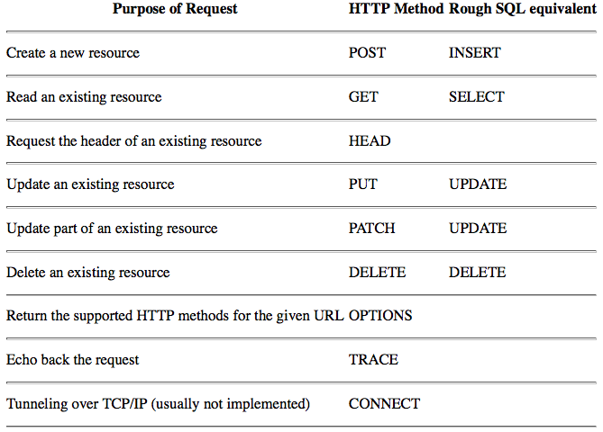Notes
- If you’re implementing a read-only API, you might only need to implement GET methods
- If you’re implementing a read-write API you must at least also use POST, but should also consider using PUT and DELETE
- By definition, GET, PUT, and DELETE are idempotent. POST and PATCH are not
- PATCH is often not implemented, but it’s a good idea to implement it if your API supports PUT requests
Status Codes
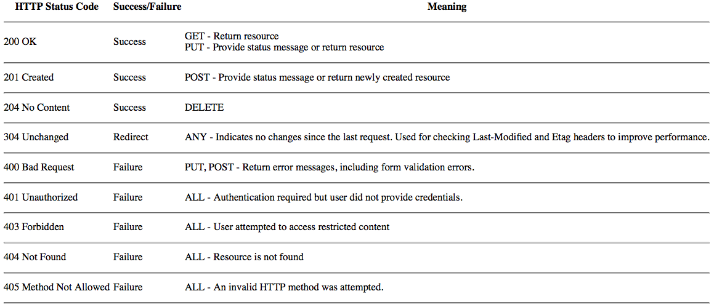Implementing a Simple JSON API
Use django-rest-framework
REST API Architecture
Code for an App Should Remain in the App
REST API views should go into views.py modules and follow the same guidelines we endorse when it comes to any other view
The same goes for app or model specific serializers and renderers.
Try to Keep Business Logic Out of API Views
It’s a good idea to try to keep as much logic as possible out of API views
Grouping API URLs
How do you build a project-wide API that looks like this?
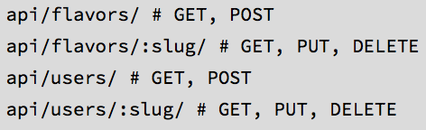Solution
When building a project-wide API we write the REST views in the views.py modules, wire them into a URLConf called something like core/api.py or core/apiv1.py and include that from the project root’s urls.py module
Templates: Best Practices
Follow a Minimalist Approach
Find simple, elegant ways to put more of your business logic into Python code rather than into templates
Template Architecture Patterns
- 2-Tier Template Architecture Example
- 3-Tier Template Architecture Example
2-Tier Template Architecture Example
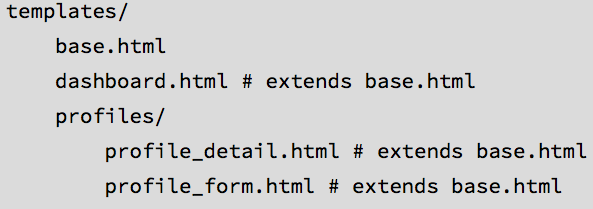3-Tier Template Architecture Example
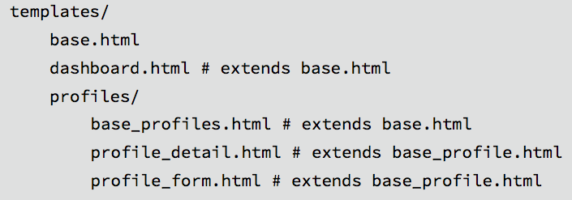Flat Is Better Than Nested
Complex template hierarchies make it exceedingly difficult to debug, modify, and extend HTML pages and tie in CSS styles
When you have large, multi-line chunks of the same or very similar code in separate templates, refactoring that code into reusable blocks will make your code more maintainable.
Template Best Practices
-
Limit Processing in Templates
- Try to think about caching to handle template inefficiencies
-
Don't Aggregate in Templates
- Ex: Birth Date -> Age
- Don't Filter With Conditionals in Templates
- Don't Use Complex Implied Queries in Templates
-
Avoid Hidden CPU Load in Templates
- Ex: Take image processing out of templates and into views, models, helper methods, or asynchronous messages queues like Celery
-
Avoid Hidden REST API Calls in Templates
- An example is querying an unfortunately slow maps API hosted by a third-party service
Don't Filter With Conditionals in Templates
Don't do this:
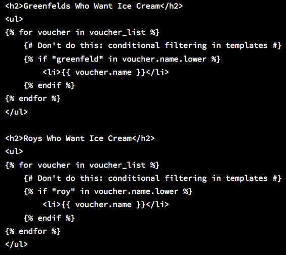Don't Filter With Conditionals in Templates
Do this:
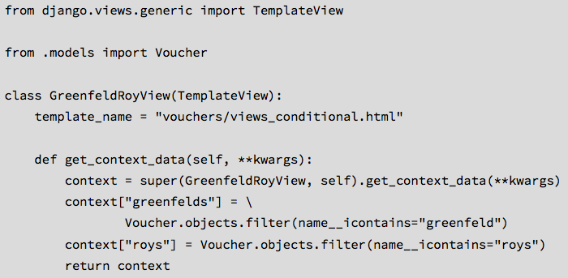Don't Filter With Conditionals in Templates
Do this:

Don't Use Complex Implied Queries in Templates
Don't do this:
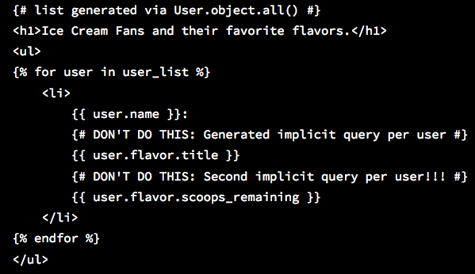Don't Use Complex Implied Queries in Templates
Use select_related() method
Do this:
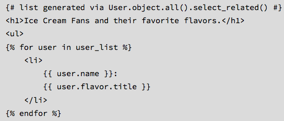Exploring Template Inheritance
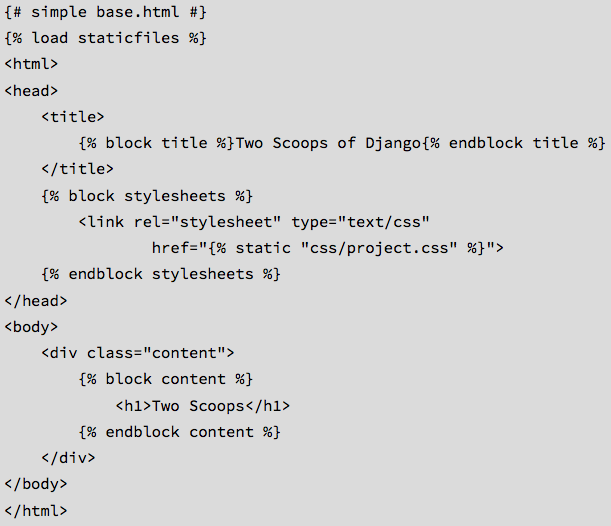Template Tags
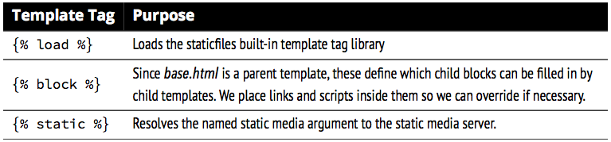Template Objects
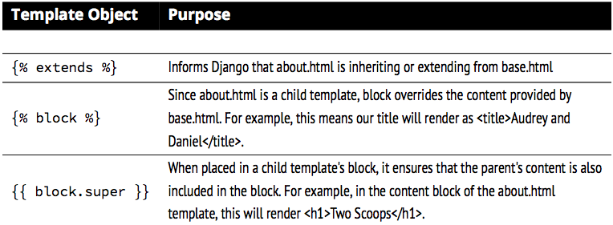{block super}
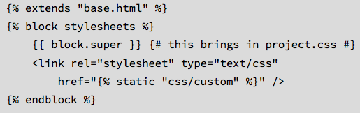
Use URL Names Instead of Hardcoded Paths
Trade offs of Replacing Core Components
Short Answer: Don’t do it
Dealing with the User Model
Finding the User Model
Use settings.AUTH_USER_MODEL for Foreign Keys
Custom User Model
- Option 1: Linking Back From a Related Model
- Option 2: Subclass AbstractUser
- Option 3: Subclass AbstractBaseUser
Linking Back From a Related Model
Subclass AbstractUser
Subclass AbstractBaseUser
AbstractBaseUser is the bare-bones option with only 3 fields: password, last_login, and is_active
Choose this option if:
- You’re unhappy with the fields that the User model provides by default, such as first_name and last_name
- You prefer to subclass from an extremely bare-bones clean slate but want to take advantage of the AbstractBaseUser sane default approach to storing passwords
Summary
Depending on the needs of a project, they can either continue with the current way of doing things or customize the actual user model
Testing
Useful Libraries For Testing Django Projects
Use coverage.py and django-discover-runner
How to Structure Tests
The first thing we do is delete the default but useless tests.py module that django-admin.py startapp creates
In its place, we create a tests directory and place an __init__.py file in it so it becomes a valid Python module. Then, inside the new tests module, because most apps need them, we create test_forms.py, test_models.py, test_views.py modules. Tests that apply to forms go into test_forms.py, model tests go into test_models.py, and so on
Test Structure
TIP: Prefix Test Modules With test_
It’s critically important that we always prefix test modules with test_, otherwise we can’t configure django-discover-runner to discover just our test files.
How to Write Unit Tests
Each Test Method Tests One Thing
A single test should assert the behavior of a single view, model, form, method or function
Be absolutely minimalistic when constructing the environment
Don’t Write Tests That Have to Be Tested
Tests should be written as simply as possible. If the code in a test or called to help run a test feels complicated or abstracted, then you have a problem
Don’t Repeat Yourself Doesn’t Apply to Writing Tests
PACKAGE TIP: Tools to Generate Test Data
- factory_boy A package that generates model test data
- model_mommy Another package that generates model test data
- mock Not explicitly for Django, this allows you to replace parts of your system with mock objects
Things That Should Be Tested
Everything
Views, Models, Forms, Validators, Filters, Signals, Template Tags, ...
Continuous Integration (CI)
For medium and large projects, we recommend setting up a continuous integration (CI) server to run the project’s test suite whenever code is committed and pushed to the project repo
Test Coverage
Try to get test coverage as high as possible. Every work day we increase our test coverage is a victory, and every day the coverage goes down is a loss
Setup a Test Runner
Create a settings/test.py module and add the following
Run Tests and Generate Coverage Report
Generate Report
Playing the Game of Test Coverage
The game has a single rule:
Mandate that no commit can lower test coverage
Finding and Reducing Bottlenecks
Speed Up Query-Heavy Pages
- Use django-debug-toolbar to help you determine where most of your queries are coming from. Configure it to include the SQLDebugPanel
- Add django-cache-panel to your project, but only configured to run when settings/dev.py module is called. This will increase visibility into what your cache is doing
- django-extensions comes with a tool called RunProfileServer that starts Django’s runserver command with hotshot/profiling tools enabled
-
Reduce the Number of Queries
- Use select_related() in your ORM
- Implement caching using a key/value store such as Memcached
- Speed Up Common Queries
TIP: Use EXPLAIN ANALYZE / EXPLAIN
If you’re using PostgreSQL, you can use EXPLAIN ANALYZE to get an extremely detailed query plan and analysis of any raw SQL query. The MySQL equivalent is the EXPLAIN command, which isn’t as detailed but is still helpful
Get the Most Out of Your Database
- Don’t add logs to the database. They will slow DB performance
- Don’t store ephemeral data in the database. This includes examples such as django.contrib.sessions, django.contrib.messages, and metrics. Instead, move this data to things like Memcached, Redis, Riak, and other non-relational stores
- Try performance tuning for your database (ex: MySQL)
Cache Queries With Memcached or Redis
Simply setting up Django’s built-in caching system with Memcached or Redis
Identify Specific Places to Cache
- Which views/templates contain the most queries?
- Which URLs are being requested the most?
- When should a cache for a page be invalidated?
Consider Third-Party Caching Packages
Additional Features of 3rd party packages:
- Caching of QuerySets
- Cache invalidation settings/mechanisms
- Alternative or experimental approaches to caching
- Ex: django-cache-machine, johnny-cache
Compression and Minification of HTML, CSS, and JavaScript
Django provides tools for you: GZipMiddleware and the {% spaceless %} template tag. However, compression and minification take up system resources, which can create bottlenecks of their own
A better approach is to use Apache and Nginx web servers configured to compress the outgoing content
Use Upstream Caching or a Content Delivery Network
Upstream caches such as Varnish are very useful. They run in front of your web server and speed up web page or content serving significantly
Content Delivery Networks (CDNs) like Akamai and Amazon Cloudfront serve static media such as images, video, CSS, and JavaScript files
Security Best Practices
Harden Your Servers
Change your SSH port and disable/remove unnecessary services
Know Django’s Security Features
Django has lots of security features. Know how to configure them. Django security features include:
- Cross-site scripting (XSS) protection
- Cross-site request forgery (CSRF) protection
- SQL injection protection
- Clickjacking protection
- Support for SSL/HTTPS, including secure cookies
- Validation of files uploaded by users
- Secure password storage, using the PBKDF2 algorithm with a SHA256 hash by default
- Automatic HTML escaping
Turn Off DEBUG Mode in Production
Your production site should not be running in DEBUG mode
Keep Your Secret Keys Secret
Keep Secret Keys Out With Environment Variables
HTTPS Everywhere
- It is always better to deploy a site behind HTTPS
- Two packages that force HTTPS/SSL across your entire site through Django middleware
Use HTTP Strict Transport Security (HSTS)
When you enable HSTS, your site’s web pages include a HTTP header that tells HSTS-compliant browsers to only connect to the site via secure connections:
Use Secure Cookies
Your site’s cookies should also be served over HTTPS. You’ll need to set the following in your settings:
- HSTS-compliant browsers will redirect HTTP links to HTTPS
- If a secure connection isn’t possible (e.g. the certificate is self-signed or expired), an error message will be shown and access will be disallowed
Use Django’s Allowed Hosts Validation
You must set ALLOWED_HOSTS in your settings to a list of allowed host/domain names. This is a security measure to prevent use of fake HTTP Host headers to submit requests
Always Use CSRF Protection With HTTP Forms That Modify Data
Django comes with Cross-site Request Forgery Protection (CSRF) built in
You should use Django’s CsrfViewMiddleware as blanket protection across your site rather than manually decorating views with csrf_protect
Prevent Against Cross-Site Scripting (XSS) Attacks
Django by default escapes a lot of specific characters meaning most attacks fail
Defend Against Python Code Injection Attacks
- Beware of the eval(), exec(), and execfile() built-ins. If your project allows arbitrary strings or files to be passed into any of these functions, you are leaving your system open to attack
- Never unpickle data received from an untrusted or unauthenticated source
- Validate All User Input With Django Forms
Handle User-Uploaded Files Carefully
- Pay close attention to where you’re uploading them and what type of files they are, to avoid security holes
- Use the python-magic library to check the uploaded file’s headers
Don’t Use ModelForms.Meta.exclude
When using ModelForms, always use Meta.fields. Never use Meta.exclude. The use of Meta.exclude is considered a grave security risk. We can’t stress this strongly enough. Don’t do it
Meta.fields vs. Meta.exclude
Beware of SQL Injection Attacks
The Django ORM generates properly-escaped SQL which will protect your site from users attempting to execute malignant, arbitrary SQL code
When using raw SQL, be especially careful to escape your SQL code properly
Never Store Credit Card Data
We recommend using third-party services like Stripe, Balanced Payments, PayPal, and others that handle storing this information for you
Secure the Django Admin
Since the Django admin gives your site admins special powers that ordinary users don’t have, it’s good practice to make it extra secure
- Change the Default Admin URL
- Use django-admin-honeypot
- Only Allow Admin Access via HTTPS
- Limit Admin Access Based on IP
Monitor Your Sites
Check your web servers’ access and error logs regularly. Install monitoring tools and check on them frequently
Keep Your Dependencies Up-to-Date
You should always update your projects to work with the latest stable release of Django. This is particularly important when a release includes security fixes
Put Up a Vulnerability Reporting Page
It’s a good idea to publish information on your site about how users can report security vulnerabilities to you
Logging
When to Use Each Log Level
LOG Levels: DEBUG, INFO, WARNING, ERROR, and CRITICAL
In your production environment, we recommend using every log level except for DEBUG
Log Catastrophes With CRITICAL
Ex: if your code relies on an internal web service being available, and if that web service is part of your site’s core functionality, then you might log at the CRITICAL level anytime that the web service is inaccessible
Log Production Errors With ERROR
We recommend that you use the ERROR log level whenever you need to log an error that is worthy of being emailed to you or your site admins
Log Lower-Priority Problems With WARNING
This level is good for logging events that are unusual and potentially bad, but not as bad as ERROR-level events
Ex: if you are using django-admin-honeypot to set up a fake admin/ login form, you might want to log intruders' login attempts to this level
Log Useful State Information With INFO
- Startup and shutdown of important components not logged elsewhere
- State changes that occur in response to important events
- Changes to permissions, e.g. when users are granted admin access
Log Debug-Related Messages to DEBUG
Log Tracebacks When Catching Exceptions
- Logger.exception() automatically includes the traceback and logs at ERROR level
- For other log levels, use the optional exc_info keyword argument
One Logger Per Module That Uses Logging
Whenever you use logging in another module, don’t import and reuse a logger from elsewhere. Instead, define a new logger specific to the module like this
Log Locally to Rotating Files
A common way to set up log rotation is to use the UNIX logrotate utility with logging.handlers.WatchedFileHandler
Other Logging Tips
- Control the logging in settings files per the Django documentation on logging
- While debugging, use the Python logger at DEBUG level
- After running tests at DEBUG level, try running them at INFO and WARNING levels. The reduction in information you see may help you identify upcoming deprecations for third-party libraries
- Don’t wait until it’s too late to add logging. You’ll be grateful for your logs if and when your site fails
- Use logutils utility for advanced logging features
Random Utilities
Create a Core App for Your Utilities
Our way of handling our utilities is to place them into a Django app called core that contains modules which contains functions and objects for use across a project
Django’s Own Swiss Army Knife
Django has a number of useful helper functions that don’t have a better home than the django.utils package
django.contrib.humanize
his is a set of localized template filters designed to give user presented data a more 'human' touch
django.utils.html.remove_tags(value, tags)
When you need to accept content from users and want to strip out a list of tags, this function removes those tags for you while keeping all other content untouched
django.utils.html.strip_tags(value)
When you need to accept content from users and have to strip out anything that could be HTML, this function removes those tags for you while keeping all the existing text between tags
django.utils.text.slugify(value)
Whatever you do, don’t write your own version of the slugify() function; as any inconsistency from what Django does with this function will cause subtle yet nasty problems. Instead, use the same function that Django uses and slugify() consistently
django.utils.timezone
When you use Django’s time zone support, date and time information is stored in the database uniformly in UTC format and converted to local time zones as needed
django.utils.translation
Much of the non-English speaking world appreciates use of this tool, as it provides Django’s i18n support
Deploying Django Projects
Using Your Own Web Servers
You should deploy your Django projects with WSGI
Most common setup:
- Gunicorn behind a Nginx proxy
- Apache with mod_wsgi